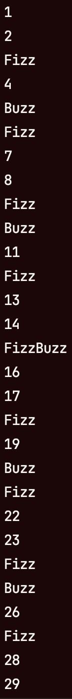
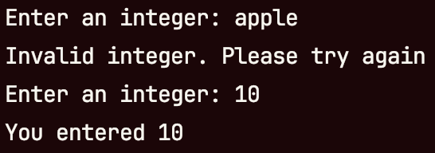
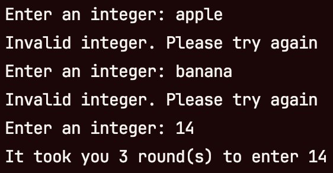
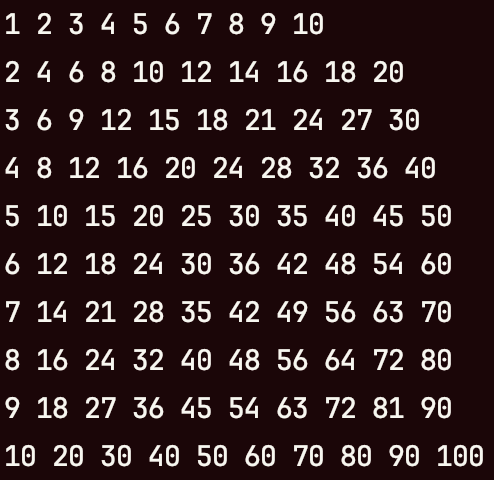
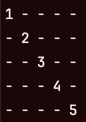
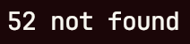

In this project, you’ll get some practice with different kinds of loops in C#. Complete the following prompts to complete the project! Each prompt has an image to show what the console output should look like for that prompt.
- Write code that prints the first 10 perfect squares starting from one
Example for perfect squares
- Write code that prints the numbers from one to 10 while avoiding multiples of three
Example for one through 10
- Write code for FizzBuzz. For FizzBuzz, print the numbers from one to 50, but replace multiples of three with the word “Fizz”, replace multiples of five with the word “Buzz”, and replace multiples of both three and five with the word “FizzBuzz”

 Example for FizzBuzz
Example for FizzBuzz
- Use a loop to print the alphabet with both uppercase and lowercase letters. This should use the loop to accomplish this and not any special methods for uppercasing or lowercasing letters. Additionally, there should be no math in the body of your loop
Example for letters
- Write code which repeatedly asks the user for an integer until they give you a valid integer. Report the user’s number at the end
 Example for user input
- Write code that does the same thing as the previous prompt, but that counts the number of tries it takes the user to enter a valid integer. Your code should report the number of tries at the end
 Example for counted user input
- Write code that prints a 10 x 10 multiplication table
 Example for multiplication table
- Write code that prints the pattern shown below
Example for staircase pattern
- Write code that prints the pattern shown below
 Example for diagonal pattern
- Write code that searches a 10 x 10 multiplication table for a target value. If found, your code should report the row number and column number of the target value. If not found, your code should state that the target wasn’t found
 Example for search